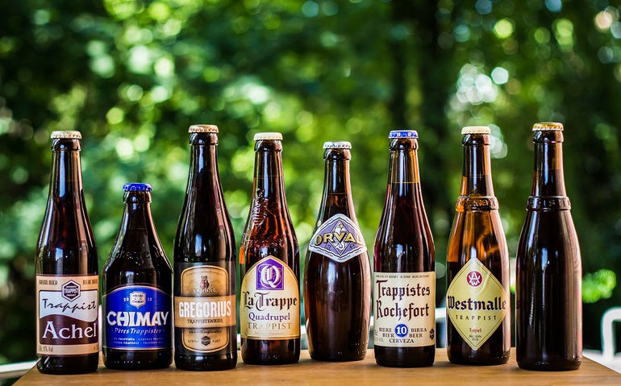
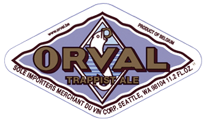

Trappist Breweries
Trappist beer is brewed by Trappist monks. Fourteen monasteries—six in Belgium, two in the Netherlands, and one each in Austria, Italy, England, France, Spain and the United States—currently produce Trappist beer as members of the International Trappist Association (ITA). However, the Authentic Trappist Product (ATP) label is assigned by the ITA to the beer products of just eleven breweries which meet their strict criteria. As of 2021, Achel is no longer recognized as a Trappist brewery because it does not have any living monks.
Belgium
- Achel(Not ATP anymore)
- Brasserie de Chimay

- Brasserie d'Orval
 - Brasserie de Rochefort

- Brouwerij der Trappisten van Westmalle

- Brouwerij Westvleteren
Other Countries
- Brouwerij Abdij Maria Toevlucht (Zundert / Netherlands)
- Brouwerij de Koningshoeven (La Trappe / Netherlands)
- Cerveza Cardeña Trappist (Not ATP anymore)
- Mont des Cats (Not ATP anymore)
- Mount St Bernard Abbey (Tynt Meadow / England)
- BSt. Joseph's Abbey in Spencer, Massachusetts (United States)
- Stift Engelszell (Austria)
- Tre Fontane Abbey (Italy)